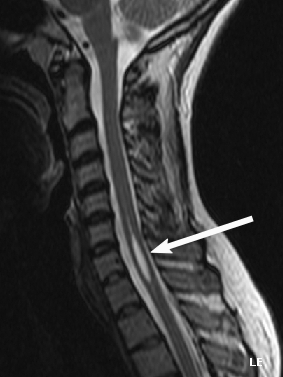

Ficha del catálogo
Siringomielia
- Sistema
- Nervioso
- Modalidad
- RM
- Región
- Médula espinal
- Dificultad
- Avanzado
La siringomielia es la presencia de una cavidad llena de líquido dentro de la médula espinal, que se extiende a lo largo de varios segmentos. Se asocia con frecuencia a alteraciones de la unión craneocervical, en especial a la malformación de Chiari tipo I, y también a antecedentes de traumatismo, infección o tumor medular. Clínicamente produce pérdida disociada de la sensibilidad termoalgésica con conservación del tacto, debilidad y escoliosis progresiva.
Técnica
Resonancia magnética de médula espinal con secuencias sagitales T1 y T2 de todo el eje y axiales en la zona afectada, incluyendo la unión craneocervical. Se añade contraste cuando se sospecha una causa tumoral y estudios de flujo cuando se valora una posible cirugía descompresiva.
Qué observar
- Cavidad intramedular con señal similar al líquido cefalorraquídeo
- Extensión longitudinal y diámetro máximo de la cavidad
- Tabiques internos y morfología arrosariada
- Posición de las amígdalas cerebelosas respecto al agujero magno
- Ausencia o presencia de realce, que orienta a tumor asociado
- Escoliosis, adelgazamiento medular y cambios de señal en el parénquima vecino
Hallazgos
Cavidad intramedular alargada, hipointensa en T1 e hiperintensa en T2, con señal paralela a la del líquido cefalorraquídeo y bordes bien definidos. Suele mostrar tabicaciones que le dan aspecto arrosariado y produce expansión del cordón medular. En la asociación con malformación de Chiari tipo I se observa descenso de las amígdalas cerebelosas por debajo del agujero magno con morfología puntiaguda.
Perlas
Toda siringomielia obliga a estudiar la unión craneocervical y a buscar una causa subyacente, porque el tratamiento se dirige al mecanismo y no a la cavidad en sí. La presencia de realce nodular o de edema medular desproporcionado debe hacer sospechar un tumor asociado, cuya cavidad quística es secundaria.
Diagnóstico diferencial
- Hidromielia o ventrículo terminal persistente
- Dilatación del conducto central, fina, central y sin expansión medular significativa, con frecuencia asintomática.
- Tumor medular quístico
- Componente sólido que realza, edema asociado y márgenes irregulares de la cavidad.
- Mielomalacia postraumática
- Cambios de señal irregulares con adelgazamiento del cordón, sin cavidad de bordes netos ni señal idéntica al líquido.
- Quiste aracnoideo intradural
- Se sitúa por fuera de la médula y la desplaza en lugar de expandirla.
Simuladores
- Artefacto de flujo del líquido cefalorraquídeo en secuencias potenciadas en T2
- Artefacto de truncamiento que simula una línea central intramedular
- Espacio subaracnoideo anterior prominente en cortes sagitales
Por modalidad
- TC
- Aporta poco de forma aislada (la mielotomografía puede mostrar relleno tardío de la cavidad cuando la resonancia está contraindicada).
- RM
- Es la técnica de elección para definir la extensión de la cavidad, la causa subyacente y el seguimiento tras la cirugía.
Protocolo
Sagitales T1 y T2 de todo el eje medular con cortes finos, axiales T2 en el segmento afectado y estudio de la unión craneocervical; se añade T1 con contraste ante sospecha tumoral y secuencias de flujo del líquido cefalorraquídeo en el estudio prequirúrgico.
Clasificación
Se distingue entre siringomielia comunicante, asociada a alteraciones de la circulación del líquido cefalorraquídeo en la unión craneocervical, y no comunicante o secundaria, vinculada a traumatismo, aracnoiditis o tumor. La hidromielia se reserva para la dilatación del conducto central revestido de epéndimo.
Errores frecuentes
- No estudiar la unión craneocervical y omitir una malformación de Chiari
- Confundir artefacto de truncamiento con una cavidad verdadera
- No administrar contraste y pasar por alto un tumor medular subyacente

siringomielia cavidad intramedular malformación de Chiari hidromielia médula espinal unión craneocervical